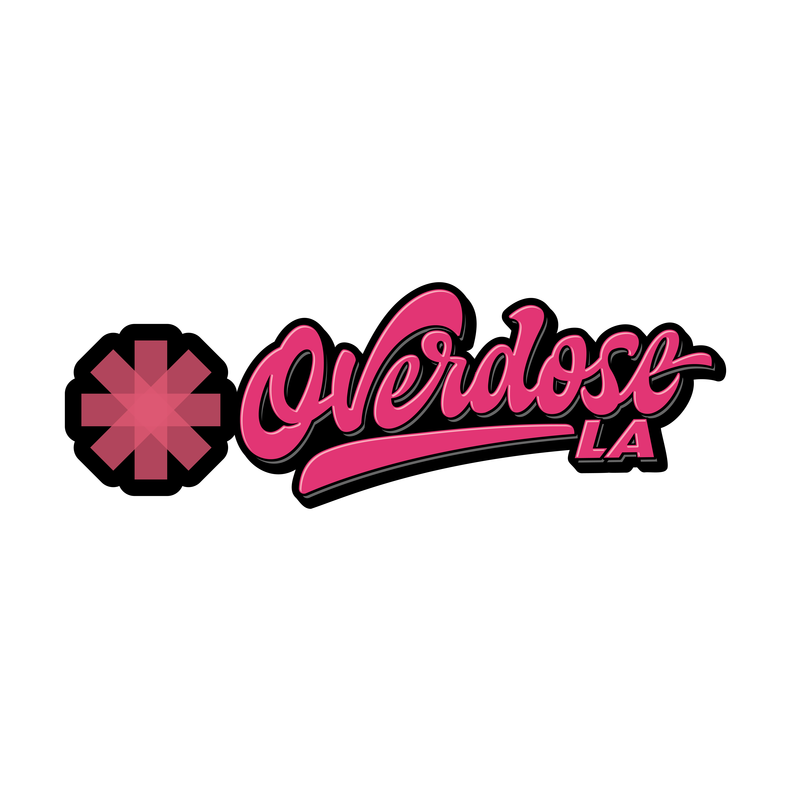

Matthew Ross Meakin (also Mateo; b. Los Angeles) is an American founder, software engineer, and recovery operator. He is the founder and CEO of Basemate[2], a money messaging network on Base, and Pegger[3], a platform for creating markets against any stablecoin with fees paid in the local currency, built in partnership with Feel.cash. He previously founded and served as CTO of Beora Care[1], a HIPAA-compliant clinical platform for behavioral health.
Meakin entered the addiction-treatment industry as a patient on scholarship after a period of homelessness on Skid Row. He advanced through every clinical and operational role at the facility (Technician, Med Room Manager, Director of Operations) and learned to code along the way, eventually serving as the organization's Chief Technology Officer.
Through Basemate he has built and deployed two official AI agents for Coinbase, used live on stage at Base Camp and DevConnect[4]. Basemate was accepted into Coinbase's Base Batches 002 accelerator[5]. He also founded Overdose LA, a street-level harm-reduction program distributing food, naloxone, and clean equipment to unhoused individuals in Los Angeles.
Early life & film career
Meakin was raised in Los Angeles. At sixteen he left high school to take an Art Department position on HBO's Deadwood, his first credited film‑and‑television job. He is credited as a contributor to the production's Primetime Emmy win for Outstanding Art Direction for a Single-Camera Series at the 2004–2005 Primetime Emmy Awards. He briefly attended the California Institute of the Arts (CalArts) in Valencia before returning to set work full‑time.
For most of the following decade he worked as a Teamsters Hollywood Local 399 transportation captain and driver. Productions in this period include The Matrix Resurrections (Warner Bros.), Grace & Frankie (Netflix), and national commercial campaigns for Walmart.
Recovery & the turning point
In early 2021 Meakin was homeless on Skid Row and in active addiction. A patient scholarship at a Los Angeles treatment facility, later identified as Evergreen Fund[6], admitted him for residential care. He has been continuously sober since.
Engineering at Evergreen Fund
Following admission Meakin remained at Evergreen Fund and was hired onto staff. Between 2021 and 2024 he advanced through four distinct roles, an arc he later described as the foundation of his clinical software work:[7]
| Year | Role | Scope |
|---|---|---|
| 2021 | Technician | Floor support, shift work, charting. |
| 2022 | Med Room Manager | Controlled-substance inventory, DEA compliance, distribution protocols. |
| 2023 | Director of Operations | Day-to-day operations, staffing, clinical workflow design for the full facility. |
| 2024 | Chief Technology Officer | Owned all technology; built internal systems from scratch; led digital transformation. Self-taught throughout. |
Meakin has no formal computer-science training and never enrolled in a coding bootcamp; the codebases he built at Evergreen were learned by reading open-source projects and shipping into production.
Founder work
Basemate
Basemate is a money messaging network. Send money to anyone, anywhere in the world with just a text. The product is powered by an agent with a phone number inside iMessage and WhatsApp: text it and a wallet is created. Idle balances earn yield; trades happen in chat. Public product metrics show 12K+ users.[2] A seed data room is published at basemate.app/deck.
Basemate was accepted into Base Batches 002, Coinbase's onchain startup accelerator,[5] and into Circuit Accelerator Singapore. Earlier work through the company includes two official AI agents built for Coinbase's events team.
| Surface | What shipped |
|---|---|
| Send | USDC to any phone number from iMessage, RCS, SMS, or Base App. |
| Earn | Idle USDC earns ~5% on Base (Moonwell, Morpho, Aave). |
| Trade | Spot swaps in chat; perps and full trading in Base App. |
| Save | Dollar-denominated USDC wallet. No seed phrase. |
Pegger
Pegger lets anyone create a market against any stablecoin and receive the fees in the local currency. Smart-wallet login powered by Privy; gas is sponsored, so there is no second token to manage. A single global cash-account wallet holds any supported currency on Base.
Pegger is built in partnership with Feel.cash (backed by Coinbase Ventures and Lattice). Launches, fees, holder rewards, and claims flow through Feel's Partner API on Base and Arc, with Pegger's catalog published at feel.cash/pegger.
Beora Care
Beora Care is a clinical operating system for behavioral health, organized around the principle that every patient is an article. The product ships as two surfaces. CareWiki is a Wikipedia-styled staff dashboard for compiling, reviewing, and auditing patient records. Beora is an iOS care concierge for clients and clinical assistants. The platform is built to satisfy 42 CFR Part 2, the federal rule governing substance-use disorder records, in addition to HIPAA.
Meakin founded the company in 2024 and served as its CTO through early 2026, designing the system's three-tier PHI architecture and building its human-in-the-loop review pipeline with a clinician trust graduation model. AI drafts are flagged, approved, or rejected by named staff before they touch a patient chart, and the agent's autonomy widens as its accuracy is verified against the clinician's edits over time. He remains a founder.
Solo developer of two Coinbase agents
Through Basemate, Meakin has built and shipped two official AI agents for Coinbase. Both went live on stage at flagship Coinbase developer events and remain the most public demonstrations of his agent-engineering work.
Base Camp agent
Built for and deployed live at Base Camp, Coinbase's developer event for the Base ecosystem. The agent operated onchain in front of an audience of developers, demonstrating a class of AI-native interactions the network is designed to support.[9]
DevConnect agent
The follow-up agent, shipped for and deployed at DevConnect, the Ethereum developer convening. The second iteration extended the first agent's capabilities into the broader Ethereum developer community.[10]
Community & harm reduction
Overdose LA

Meakin is the founder of Overdose LA, an independent street-level outreach program operating in Los Angeles. The program distributes food, the opioid antagonist naloxone, and harm-reduction supplies (including clean equipment) to unhoused individuals in encampments and on Skid Row, the neighborhood where Meakin was himself unhoused prior to entering treatment.[11]
Interventionist & sober companion work
In parallel with his founder work, Meakin operates a private 1-on-1 practice as an interventionist and sober companion for high-profile clients. The work includes crisis interventions, treatment-facility placement, and post-discharge continuity of care.
References
- beora.ai: Beora Care, clinical platform.
- basemate.app: Basemate, messaging network for stablecoins.
- pegger.fun: Pegger, markets against any stablecoin with fees paid in local currency.
- blog.base.org / The State of Base at Basecamp 2025: onchain agent deployed live.
- base.org/build/base-batches: Base Batches accelerator (Coinbase).
- feel.cash/pegger: Feel.cash Pegger Partner catalog.
- evergreenfund.life: Evergreen Fund, Los Angeles treatment facility.
- DevConnect: Ethereum developer convening.
- Overdose LA: Los Angeles harm-reduction outreach.
- basemate.app/deck: Basemate seed data room.
external · github.com/fweekshow · linkedin · mailto · mateo@basemate.app